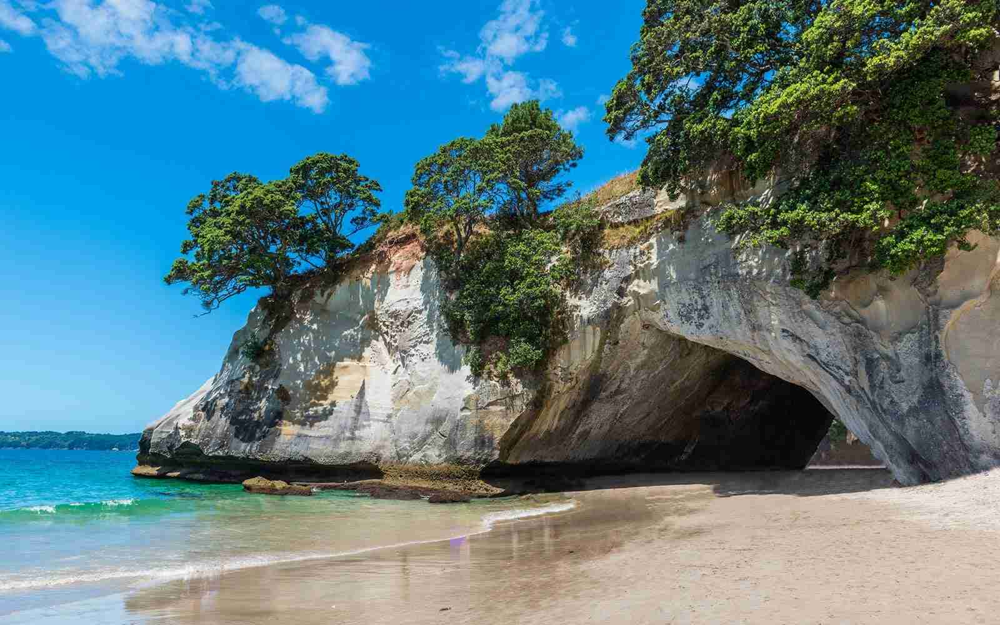
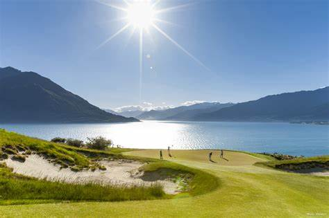

New Zealand is one of the most beautiful countries in the world. Offering visitors unbeatable changes for adventure and exploration, holidays in New Zealand is the best.

In view of the safe environment that applies to both islands, your stay in New Zeaalnd should all work out for the best. In fact, as it is rated as one of the safest countries in the world, New Zealand is a relaxing destination> where travelers quickly learn to feel at home in an untroubled environment.

Tourist places in New Zealand include dense native forests, beaches, mountains, glaciers,
fjords and thermal regions that have been well-preserved by the environmentally-conscious government and culture. You can see a blend of the traditional Maori culture with modernity in cosmopolitan cities, appealing villages and enormous
expanses of intact wilderness.
.jpg)
There are many places in New Zealand where you can simply relax, taking in the beautiful view, or you can set out to explore the wilderness. Pristine and heavenly, New Zealand tourist attractions have something
for everyone. Here is a list of top tourist attractions in New Zealand. Hope you will enjoy.